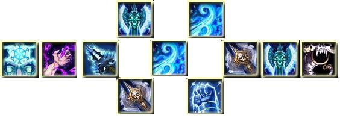

Билд 2.
Для слабо одетого персонажа, не имеющего 4 куска т10, лучше всего взять билд в 15/56/0, так как уничтожение без большого количества АрП не будет перегонять ледяной удар в процентном соотношении (но все еще будет наносить больше урона без прока Машина для убийств!), а при низком показателе крита, Машина для Убийств и Мрачная решимость смогут немного это скомпенсировать. К тому же, данный билд намного проще в ротации. Вернее, как таковой ротации в нем даже нет. Во льду берутся все дпс таланты, исключая Смертный холод, потому как один талант отдавать за один крит раз в две минуты – это слишком дорого. В крови берется Мясник для маленькой дополнительной генерации рун и Пагуба для крита Уничтожение. Во втором тире, так как мы используем одноручное оружие, берем Клинковую броню. Ну и в третьем тире прокачиваем Мрачную решимость как компенсацию малому количеству крита от экипировки.
1.Меткость — как и для многих дамагеров кап меткости очень важен для фрост ДК и состовляет 8%, однако 3% мы берем из талантов, поэтому набрать останется всего 5%, что будет легко благодаря шмоту
2.Мастерство — в идеале стремимся к 26%, чтобы бос не уклонялся от ваших атак
3.Рейтинг пробивания брони или АрП — стремитесь набрать 90%
4.Критический удар — для фрост дк вполне хватит 40%, его мы с легкостью наберем со шмота, поэтому не стоит ставить камни на крит
5.Сила — чем больше тем лучше, но желательно постараться перевалить за 2к
Ледяной удар — Рыцарь смерти мгновенно атакует врага, нанося ему 55% урона от оружия и дополнительно 137.5 ед. урона от магии льда
Кровавый удар — Мгновенная атака, наносящая противнику 40% урона от оружия и дополнительно ед. урона. Урон возрастает на 12.5.1% за каждую болезнь, которой поражена цель
Удар чумы — Жестокий удар, наносящий цели % урона от оружия, ед. урона дополнительно и заражающий цель Кровавой чумой – болезнью, наносящей периодический урон от темной магии
Уничтожение — Жестокая мгновенная атака, наносящая противнику 80% урона от оружия и дополнительно 467.2 ед. урона. Каждая болезнь, которой поражена цель, увеличивает общий урон на 12.5.1%. Способность снимает с цели все болезни
Ледяное прикосновение — Наносит от 227 до 227 ед. урона от магии льда и заставляет противника окоченеть. Поражает его болезнью «Озноб», наносящей периодический урон и снижающей скорость атаки в ближнем и дальнем бою на 14% в течение 15 сек
Кровоотвод — Многновенно активирует руну крови и превращает ее в руну смерти на 20 сек
Несокрушимая броня — Укрепляет ваш доспех толстым слоем льда, усиливая броню на 25%, и повышает вашу силу на 20% на 20 сек
Усиление рунического оружия — Усиливает руническое оружие, немедленно активируя все руны и моментально накапливая 25 ед. силы рун
Воющий ветер — Продувает цель ледяным ветром, наносящим 518 — 563 ед. урона от магии льда всем противникам в радиусе 10 м
Мор — Распространяет наложенные на цель болезни «Кровавая чума» и «Озноб» на других противников в радиусе 0 м от цели
Ваша ротация зависит от того как вы вступите в бой и очень важно добиться бесперебойного цикла ротации
Как только РЛ дал команду начинать бой, прожимаем Кровоотвод и сразу следует Несокрушимая броня. Бесперебойный цикл получится именно при использовании Кровоотвод. Можно дальше прожать Ледяное прикосновение и если на противнике висят все дебаффы, то используем Удар чумы.Дальше прожимаем Уничтожение -> Кровавый удар -> Мор, несколько раз Ледяной удар. В этот момент все КД у вас обновляется и начинаем ротацию гонять по кругу.
Так же ротацию Фрост ДК в ПвЕ можно немного упростить. При этом ее эффективность совершенно не теряется. Как только ротация обновилась после применения «Мора», прожимаем сразу же Ледяной удар -> Уничтожение -> Мор. Как только обновились у противника дебаффы, применяем Кровавый удар. КД можно обновлять периодически с помощью нашего Усиления рунического оружия. В результате это дает возможность добавить в ротацию два удара «Уничтожения».

Билд 2:
Ротации у подобного билда нет, скорее существует приоритет ударов. Несокрушимая броня всегда нажимаете с Кровоотвод (последовательность нажатия определяется наличием или отсутствием у вас рун смерти). Усиление рунического оружия сдавать, если есть скорпион, под прок скорпиона, после обновления болезней (первая руна смерти), кровавого удара (вторая руна смерти) двух Уничтожение. Таким образом, вы дадите сразу пять Уничтожение подряд даже с малой длительностью болезней и сумеете не потерять их.
Приоритеты выглядят следующим образом:
1.
Поддержание болезней. Накладываете Ледяное прикосновение, затем удар чумы, обновляете болезни мором (Данный порядок обусловлен талантом Ловчий тундры, увеличивающим весь урон на 15% по целям, зараженным Ознобом).
2.
Если РП (Rune Power) у вас 130 или близка к этой отметке, то Ледяной удар. В остальных случаях – уничтожение.
3.
Уничтожение / Ледяной удар соответственно.
4.
Воющий ветер. Используйте для АОЕ, но только при одновременном проке вместе с Машина для убийств. Тогда его приоритет #1. Без прока машины для убийств и в соло цель, он стоит на положенном ему 4-м месте.
5.
Если вы имеете два предмета из набора т9 или четыре предмета из набора т10, то можно использовать Кровавый удар для поддержания бафов. В противном случае, он прожимается в самую последнюю очередь.
6.
Смерть и разложение. Используйте на 4 цели минимум, если они стоят в луже хотя бы 8 секунд. В остальных случаях, слишком дорогой по ресурсам спелл. Не забудьте, что все ваши способности наносят больше урона по зараженным Ознобом врагам.
7.
Вскипание крови. Способность не очень полезная, но если кровавые руны нам не нужны на обновление болезни, то при наличии распыленных в аое болезнях и 4-х целях вокруг – можно заменять кровавый удар им.
8.
Лик смерти. Возможно, и существуют теоретические ситуации, когда это заклинание полезно, но вы сэкономите массу сил, просто убрав его с панели.
Макросы на Рунический удар
/cast Уничтожение
/cast !Рунический удар
/startattack
и
/cast Удар чумы
/cast !Рунический удар
/startattack
Макрос на крутой ДПС Фрост ДК
/#showtooltip
/castsequence [button:1] reset=6/combat Ледяное прикосновение, Удар чумы, Ледяной удар, Кровавый удар, Кровавый удар, Уничтожение, Ледяной удар, Уничтожение, Ледяной удар, Уничтожение, Уничтожение, Ледяной удар
/cast !Рунический удар
Вам необходимо непременно в Билде для Фрост ДК прокачать «Могильный холод» на два очка. Из глифов у вас должен стоять непременно «Символ ледяного прикосновения», а так же «Символ ледяного удара». Особенно важно то, чтобы в таланте 2Эпидемия» так же было вкачено два очка. В итоге ваш ДПС взлетит до максимума.
По ДК макросов еще достаточно мало, так как ведь данный класс еще молодой. Если вы знаете из макросов еще что то интересное, бросайте их в коменты.
Макрос для Воющего ветра и Смертного холода
Уникальность в том, что использование двух заклинаний происходит без какой либо задержки между ними.
#showtooltip Воющий ветер
/cast Смертный холод
/cast Воющий ветер